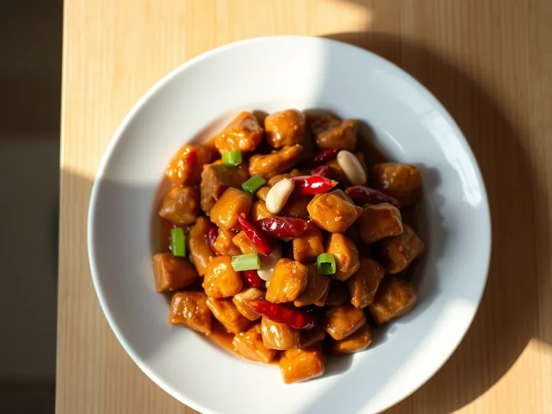

Курица гунбао с арахисом
Острая китайская курица с арахисом, чесноком и имбирём в глянцевом соусе
25 мин3 порц.445 ккал на порциюБ 46 · Ж 22 · У 15Азиатская кухня
Открыть в приложении: порции, таймеры, список покупок
Продукты на 3 порц.
- Куриное филе500 г
- Арахис60 г
- Соевый соус2 ст. л.
- Сахар1 ст. л.
- Рисовый уксус1 ст. л.
- Крахмал1 ст. л.
- Чеснок2 зуб.
- Имбирь10 г
- Перец чили1 шт
- Зелёный лук0,5 пучка
- Растительное масло2 ст. л.
Как готовить
- Нарежьте филе кубиком 1,5 см, перемешайте с 1 ложкой соевого соуса и половиной крахмала. Чеснок и имбирь порубите, чили нарежьте кольцами, лук - кусочками 2 см. Это 8 минут.
- Смешайте соус: остаток соевого соуса, сахар, уксус, остаток крахмала и 50 мл воды.
- Обжарьте арахис на сухой сковороде на среднем огне 3 минуты до золотистого цвета, пересыпьте в миску.
- Разогрейте масло на сильном огне, обжарьте чили, чеснок и имбирь 30 секунд. Добавьте курицу и жарьте 5-6 минут, помешивая, пока она не побелеет полностью.
- Влейте соус, помешивайте 1 минуту до загустения. Добавьте арахис и зелёный лук, перемешайте и снимите с огня.
Совет. Арахис кладите в самом конце, чтобы он остался хрустящим. Для менее острого вкуса уберите из чили семена.